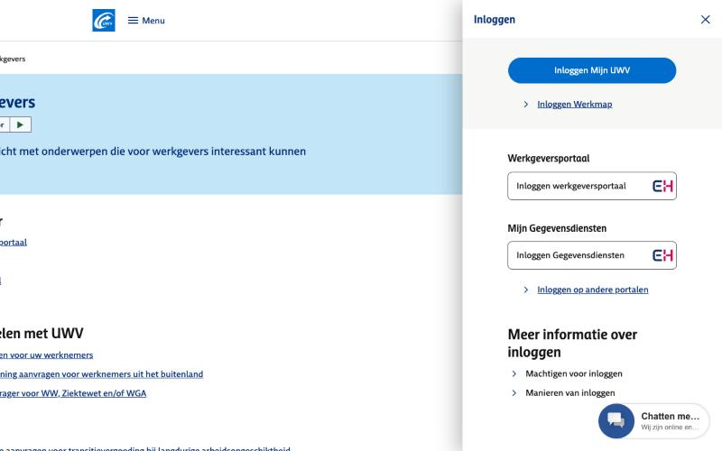
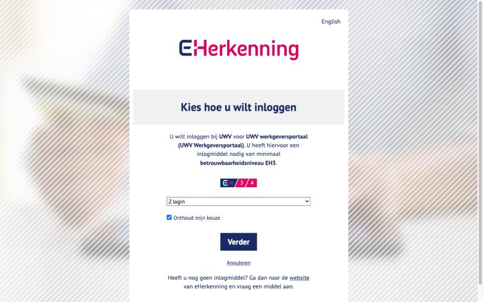
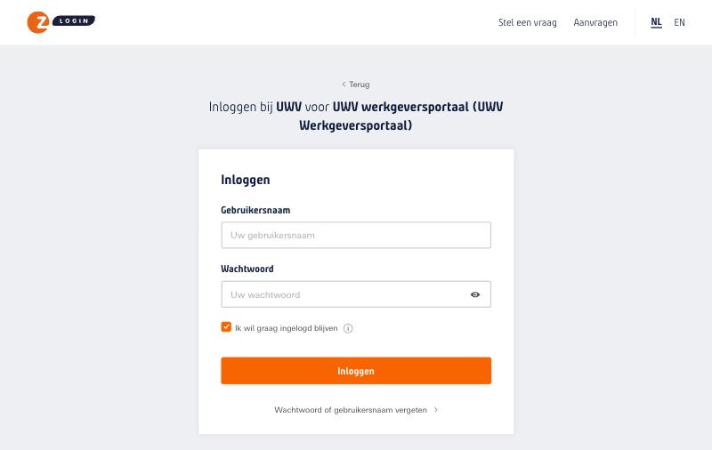

Wat er gebeurt vanaf het moment dat Karin Jansen namens haar onderneming Koffiezaak Noon op "Inloggen met eHerkenning" klikt, tot ze is ingelogd. Elke pijl gaat van de partij die iets doet naar de partij die het ontvangt; een vak op een levenslijn is een controle die een partij zelf uitvoert.
Karin wil namens Koffiezaak Noon iets regelen in het werkgeversportaal van UWV. Dit zijn de schermen die ze tegenkomt, nagelopen op 20 oktober 2026. Daaronder staat wat er achter de schermen gebeurt.
Het werkgeversportaal is het portaal van UWV voor werkgevers en ondernemers. Onder Inloggen staat het met het eHerkenning-logo.

UWV heeft Digidentity als herkenningsmakelaar, dus de browser gaat naar het domein eid.digidentity.eu. Karin merkt dat nauwelijks: ze ziet vooral het eHerkenning-logo. Het scherm noemt de dienst (UWV werkgeversportaal) en het niveau dat nodig is (EH3). De Belastingdienst gebruikt KPN als makelaar (brk.eid.kpn.com), met hetzelfde soort keuzescherm.
De lijst toont de leveranciers waar je een eHerkenningsmiddel kunt hebben: Digidentity, KPN, QuoVadis, Reconi, We-ID en Z login. Karin kiest Z login, omdat Koffiezaak Noon daar haar middel en machtigingen heeft. Met Onthoud mijn keuze slaat ze deze stap de volgende keer over.

Ze komt op authenticatiedienst.zlogin.nl. Bovenaan staat dat ze inlogt bij UWV voor het werkgeversportaal. Ze logt in met haar gebruikersnaam en wachtwoord bij Z login, en daarna met de tweede stap die bij haar middel hoort.

Z login controleert of ze namens Koffiezaak Noon het werkgeversportaal mag gebruiken en stuurt via Digidentity een ondertekende verklaring naar UWV. Karin komt terug op het werkgeversportaal, ingelogd namens Koffiezaak Noon. Van dit scherm is geen afbeelding: daarvoor is een echt account nodig.
Een dienstverlener kiest een herkenningsmakelaar, een ondernemer kiest een leverancier, en elke makelaar werkt met alle leveranciers. Daardoor kan Karin met één middel bij alle aangesloten diensten inloggen. De namen zijn een voorbeeld.
Sommige bedrijven hebben beide rollen: Digidentity en KPN zijn bijvoorbeeld zowel makelaar als leverancier.
Groen gestippeld is wat Karin doet, oranje het doorsturen van het inlogverzoek, blauw de ondertekende verklaring en paars een eigen controle.
De nummers horen bij de pijlen en vakken in het diagram hierboven.
urn:etoegang:DV:00000001234567890000:services:1 voor de dienst Werkgeversportaal van UWV. Het lange getal is het OIN van de dienstverlener, de 1 het volgnummer van de dienst.Alleen de leverancier weet wie Karin echt is. UWV kent alleen het bedrijf en een pseudoniem dat alleen voor UWV betekenis heeft. De makelaar ziet het bericht, maar kan de inhoud niet lezen.
Vereenvoudigde weergave op basis van het Afsprakenstelsel Elektronische Toegangsdiensten. Technische details, zoals de precieze inhoud van de assertion, kunnen per makelaar en versie verschillen.